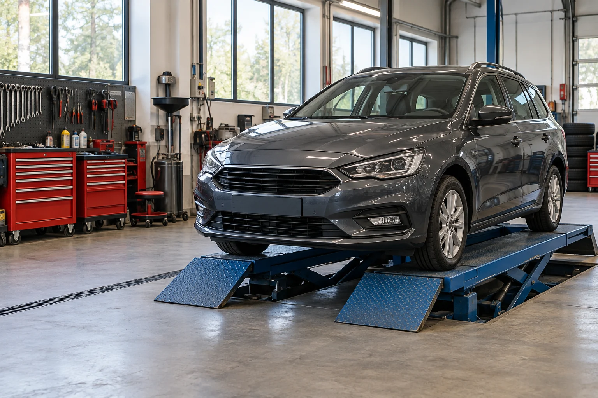

Määräaikaishuollot
Auton huoltotarpeiden kartoitus ja huolto-ohjelman mukaiset työt. Sisältö sovitaan autokohtaisesti.
Kysy lisää →
Autohuolto Vaihde / Porvoo
Määräaikaishuollot, korjaukset ja vikojen selvitys. Kerromme, mitä autollesi tehdään, ja sovimme työstä kanssasi ennen aloittamista.
Huoltopalvelut
Kerro autosi tiedot ja huollon tarve. Katsotaan yhdessä sopiva palvelu ja ajankohta.
Auton huoltotarpeiden kartoitus ja huolto-ohjelman mukaiset työt. Sisältö sovitaan autokohtaisesti.
Kysy lisää →Kun merkkivalo syttyy tai ajossa tuntuu poikkeavaa. Selvitetään vian syy ja sovitaan jatkosta.
Kysy lisää →Jarrujen ja alustan tarkastukset sekä tarvittavat korjaustyöt. Käymme löydökset läpi kanssasi.
Kysy lisää →Renkaiden kausivaihdot ja kunnon arviointi. Kysy autollesi sopivaa aikaa ja palvelua.
Kysy lisää →Paikallinen autokorjaamo
Autohuolto Vaihde on kuvitteellinen paikallinen korjaamo. Sivun esimerkissä toiminnan ydin on selkeä palvelu ja suora yhteys auton omistajaan.
Aluksi käymme läpi huollon tarpeen ja arvion työstä. Mahdollisista lisätöistä sovitaan erikseen ennen niiden tekemistä.
Näin asioit
Auton perustiedot, huollon tarve ja toivottu ajankohta auttavat alkuun.
Käymme läpi tehtävät työt ja hinnoittelun. Tarvittaessa aloitamme vian selvityksestä.
Kerromme, mitä autolle tehtiin ja onko jatkossa jotain huomioitavaa.
Hyvä tietää
Vastauksia tavallisiin kysymyksiin ennen yhteydenottoa.
Tässä korjaamoesimerkissä huoltotyöt sovitaan etukäteen. Oikealla sivustolla yhteydenotto tai varauslomake auttaisi sopivan ajan löytämisessä.
Hinta riippuu autosta, työn sisällöstä ja tarvittavista osista. Työ ja hinnoittelu käydään läpi ennen aloittamista. Tässä mallissa ei esitetä oikeita huoltohintoja.
Mahdolliset lisätarpeet ja niiden kustannukset käydään läpi auton omistajan kanssa ennen lisätöiden aloittamista.
Auton merkki, malli ja huollon tarve auttavat alkuun. Oikeassa varauspalvelussa voitaisiin kysyä myös rekisteritunnus ja yhteystiedot. Tässä mallissa tietoja ei kerätä.
Ota yhteyttä
Kerro auton tiedot ja huollon tarve. Oikealla sivustolla varauspyynnöstä sovittaisiin huollon ajankohta.
040 000 0000
hei@vaihde.example
Esimerkkikatu 6, 06100 Porvoo
Ma–pe 8–17 · Esimerkki
Kuvitteelliset yhteystiedot. Painike avaa mallin esittelyikkunan.